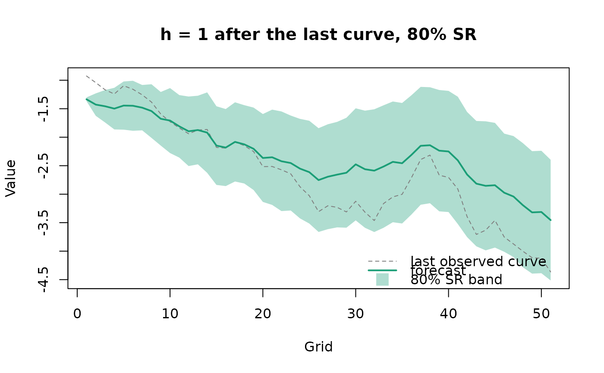
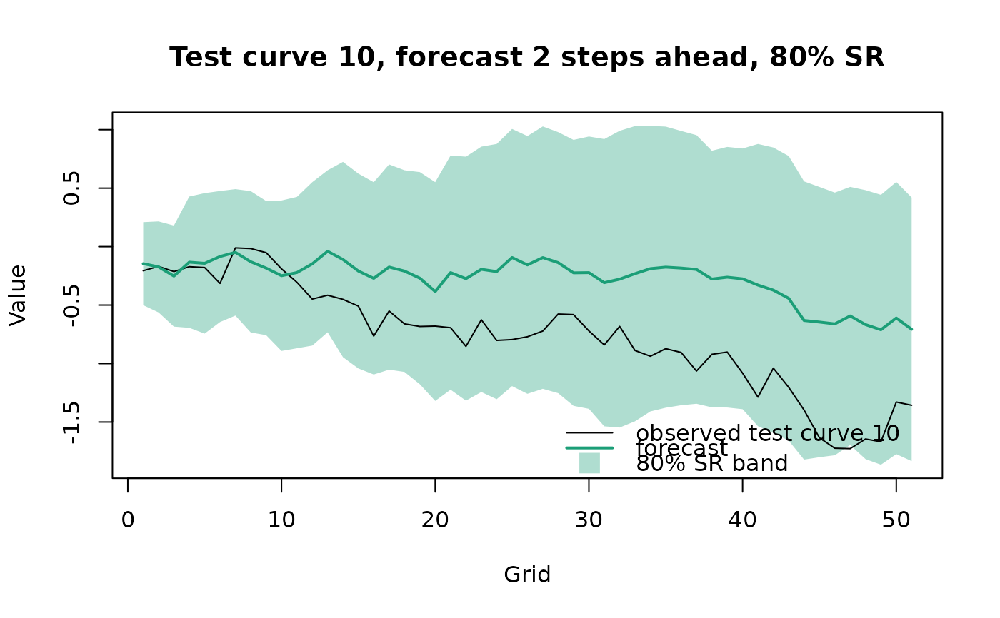
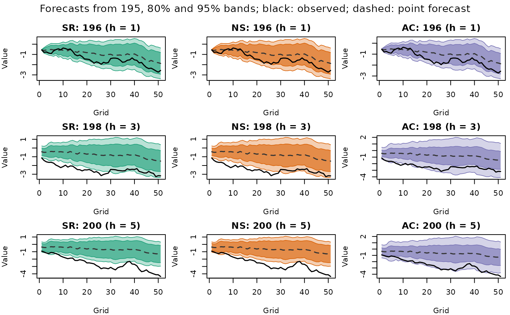
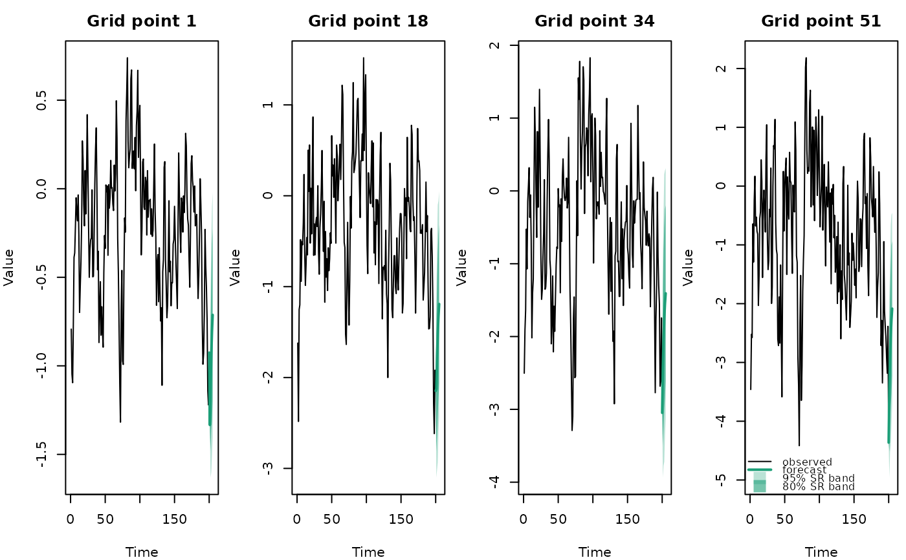
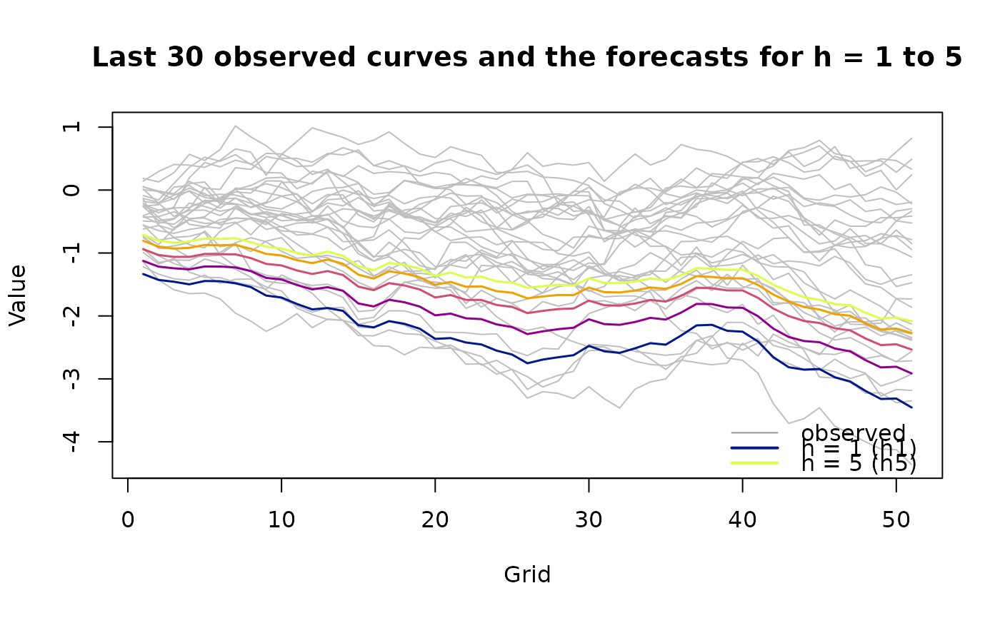

Plot forecasts and conformal prediction bands
plot.farfima_forecast.Rdtype = "curve": a single plot of the forecasthsteps beyond the data with its conformal prediction band. Withtarget_test_curve = k, the forecast of the k-th test curve madehsteps earlier, with the observed curve.type = "horizons": a grid of plots, one column per band type and one row per horizon, each showing the point forecast with all levels of the band shaded. With a single band type, the horizons are side by side. With a test sample, the forecasts come from the latest test origin that reaches every horizon shown, and the observed curves are added.type = "series": a row of plots, one per grid point inat, each showing that grid point over time with the forecasts beyond the data.type = "recent": a single plot of the lastn_recentcurves in grey and the forecasts beyond the data, coloured by horizon.
Usage
# S3 method for class 'farfima_forecast'
plot(
x,
type = c("curve", "horizons", "series", "recent"),
h = 1,
band = attr(x, "settings")$band[1],
level = attr(x, "settings")$level[1],
target_test_curve = NULL,
at = NULL,
n_recent = 30,
argvals = NULL,
xlab = NULL,
ylab = "Value",
main = NULL,
legend = "bottomright",
...
)Arguments
- x
A forecast from
predict().- type
"curve","horizons","series"or"recent".- h
Forecast horizon. For
"horizons"and"recent", one or more horizons: by default 1,h/2andhfor"horizons", and all for"recent".- band
Conformal prediction band to draw. For
"horizons", one or more bands, by default all.- level
Level of the band for
type = "curve".- target_test_curve
Position in the test sample of the curve forecast, between
hand the number of test curves (type = "curve").- at
Grid values for
type = "series", by default four spread over the grid.- n_recent
Number of curves shown for
type = "recent".- argvals
Grid values. Defaults to the row names of the curves if numeric.
- xlab, ylab
Axis labels.
- main
Title. For
type = "series", the text before the grid value in each panel title, such as"Age".- legend
Legend position, or
NULLfor no legend.- ...
Other arguments passed to
graphics::plot(), such asxlim.
Examples
sim = sim_farfima(n = 200, d = 0.3, p = 1, q = 0, no_grid = 51, seed = 1)
blocks = split_curves(sim)
fit = farfima(blocks$train, blocks$valid, d = 0.3, order = c(1, 0), h = 5,
trim = 50, verbose = FALSE)
fc = predict(fit, test = blocks$test, verbose = FALSE)
plot(fc, h = 1)

plot(fc, h = 2, target_test_curve = 10)

plot(fc, type = "horizons")

plot(fc, type = "series")

plot(fc, type = "recent")
